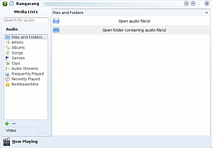
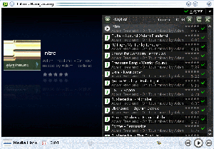

Bangarang
Dieser Artikel wurde für die folgenden Ubuntu-Versionen getestet:
Ubuntu 14.04 Trusty Tahr
Zum Verständnis dieses Artikels sind folgende Seiten hilfreich:
Bangarang  ist ein noch junger Media-Player auf der Basis der KDE-Platform. Unter GNOME ist Bangarang genauso lauffähig wie unter KDE. Für Mandriva und Suse Linux wird das Programm ebenfalls angeboten. Der Name kommt aus dem jamaikanischen und bedeutet so viel wie: Chaos und Unordnung.
ist ein noch junger Media-Player auf der Basis der KDE-Platform. Unter GNOME ist Bangarang genauso lauffähig wie unter KDE. Für Mandriva und Suse Linux wird das Programm ebenfalls angeboten. Der Name kommt aus dem jamaikanischen und bedeutet so viel wie: Chaos und Unordnung.
Bangarang bietet eine Vielzahl an Funktionen:
Das Abspielen von CDs und DVDs
Mediabibliothek für Audio, Audiostreams, Video
Suchfunktion
Bewertungsfunktionen
Kategorisierung
Installation¶
Bangarang ist ab Ubuntu 10.04 in den offiziellen Paketquellen verfügbar. Folgendes Paket muss installiert [1] werden:
bangarang (universe)
 mit apturl
mit apturl
Paketliste zum Kopieren:
sudo apt-get install bangarang
sudo aptitude install bangarang
Benutzung¶
Anschließend kann das Programm mit bangarang gestartet werden [2].
Medien hinzufügen¶
Links unten im Bangarang Fenster gibt es den Knopf "Media Lists". Klickt man auf diesen Knopf, so öffnet sich ein neues Fenster.
|  |
| Bangarang - Medialist |
In der linken Spalte gibt es die zwei großen Kategorien
"Audio"
"Video"
Diese sind dann noch unterteilt in
"Files and Folders", wo man Medien hinzufügen kann
"Artists"
"Albums"
"Songs"
"Genres", etc.
Fügt man ein "Folder" hinzu, so werden sämtliche Medien in dieses Fenster geladen. Jetzt müssen noch die einzelnen Medien ausgewählt werden, die in die Playlist aufgenommen werden sollen. Mit
Strg +
A kann man alle Medien auswählen und mit einem  -Klick auf die rechte obere Ecke auf den Pfeil nach unten erscheint das Kontextmenü, das man auch mit der
-Klick auf die rechte obere Ecke auf den Pfeil nach unten erscheint das Kontextmenü, das man auch mit der  Maustaste aufrufen kann. Wählt man "Play all", wechselt das Programm wieder zum Hauptfenster zurück und die Medien werden abgespielt.
Maustaste aufrufen kann. Wählt man "Play all", wechselt das Programm wieder zum Hauptfenster zurück und die Medien werden abgespielt.
Playlist¶
|  |
| Bangarang Medienplayer - Playlist |
Mit einem -Klick auf die Beschriftung Playlist rechts oben, erscheint auf der rechten Seite eine Liste aller ausgewählten Medien. Das aktuell abgespielte Medium wird leicht hervorgehoben.
Für Parties eignet sich besonders der Vollbildmodus, der zum Einen schön aussieht und zum Anderen die Funktionalität auf das Wesentliche beschränkt. Über der Playlist rechts werden drei weitere Symbole angezeigt.
Ein Kreuz - leert die aktuelle Playlist.
Ein halbes Rechteck - schaltet die Wiederholfunktion ein.
Überkreuzende Linien - schaltet die Zufallswiedergabe ein.
Links neben der Playlist ist noch ein Augensymbol platziert. Klickt man dort drauf, werden nur die nächsten 10 Stücke angezeigt, die als nächstes abgespielt werden.
 Programmübersicht
Programmübersicht- Erstellt mit Inyoka
-
 2004 – 2017 ubuntuusers.de • Einige Rechte vorbehalten
2004 – 2017 ubuntuusers.de • Einige Rechte vorbehalten
Lizenz • Kontakt • Datenschutz • Impressum • Serverstatus -
Serverhousing gespendet von